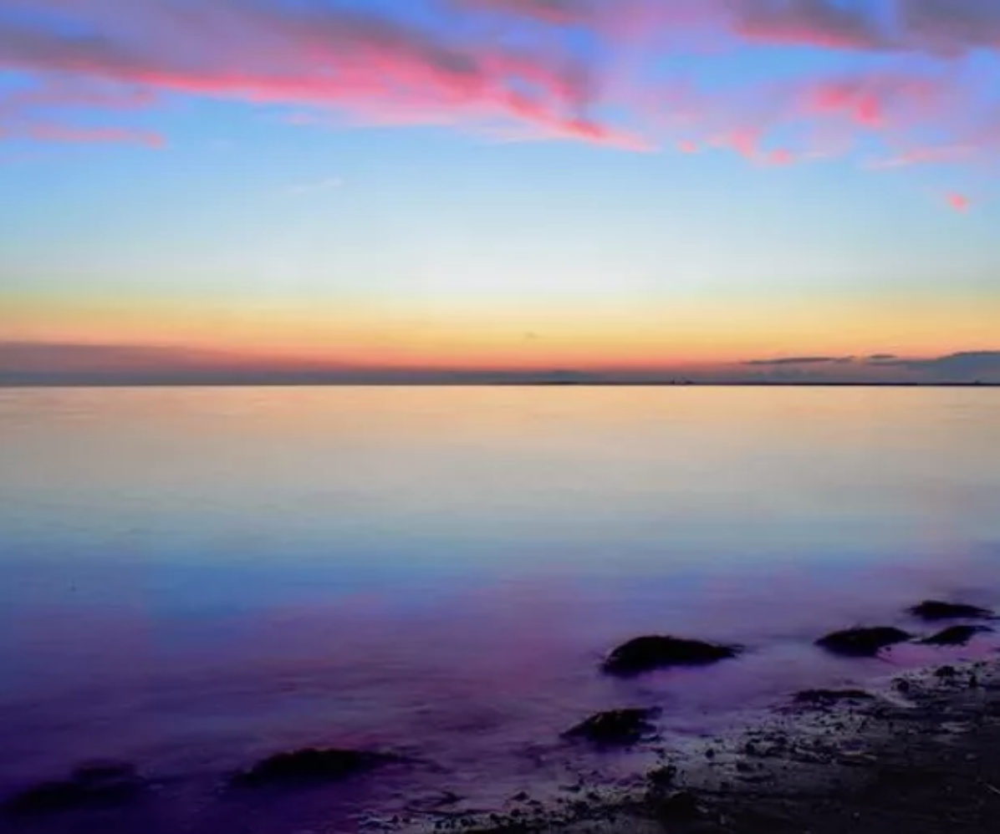

Gallery Opening Sunday, Feb. 23rd 4-7pm
BETWEEN WATER AND LAND
As a 16-year-old, I have only begun my journey as a photographer.
I am often discovering new attributes to my style and subjects to photograph.
Currently I’m drawn to landscape, portrait, and aerial photography, with some
wildlife, still life, and abstract here and there. For the most part, I used to
take photos to “capture the moment” (and I took quite a lot), but now I
have transitioned to a more professional, artistic mode of photography.
Not only have I learned technical skills and composition, but more importantly,
how to create a photo that moves people. I never settle for just “okay” —
I am always working to take my pictures to the next level. As I isolate my
interests and hone in on my skills and artistic style, I hope to advance my
craft and become ever more engaged in the community.

ABOUT HARRISON
Harrison Gordon is an award-winning photographer and currently a junior in high school.
He specializes in taking landscape, portrait, and aerial photography: offering personal
and business photoshoots and aerial event coverage.
Most recently he endeavored
to expand his portraiture collection and skills, offering family photoshoots throughout
the holiday season. Prior to this, he took his landscape photography to the next level
when he embarked on an expedition with National Geographic and one of their esteemed
photographers, Ronan Donovan. They travelled to San Francisco and Yosemite National Park
for two weeks of intense photographic challenges, where he was exposed to a multitude
of methods and opportunities which drastically improved my skills.
His work has
been awarded Best in Show in the Pequot Library Art Show 22 Under 22, and Best
Landscape at the Westport Library. In addition, his art is on display as a
full-restaurant gallery at Bistro du Soleil in Westport. He loves using his creativity
to produce stunning photographs of places and people, especially for the benefit of the community.